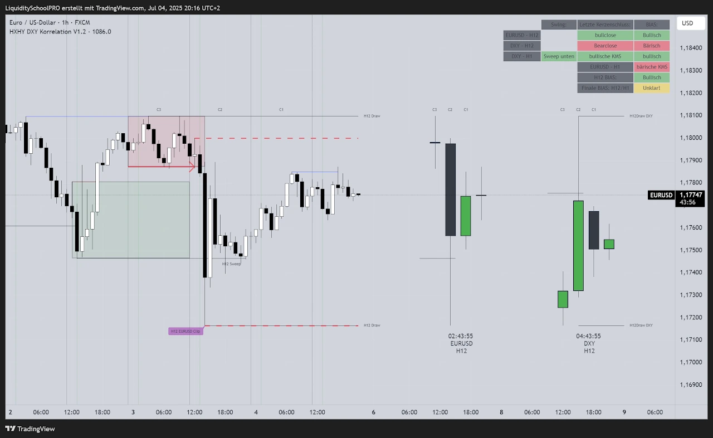
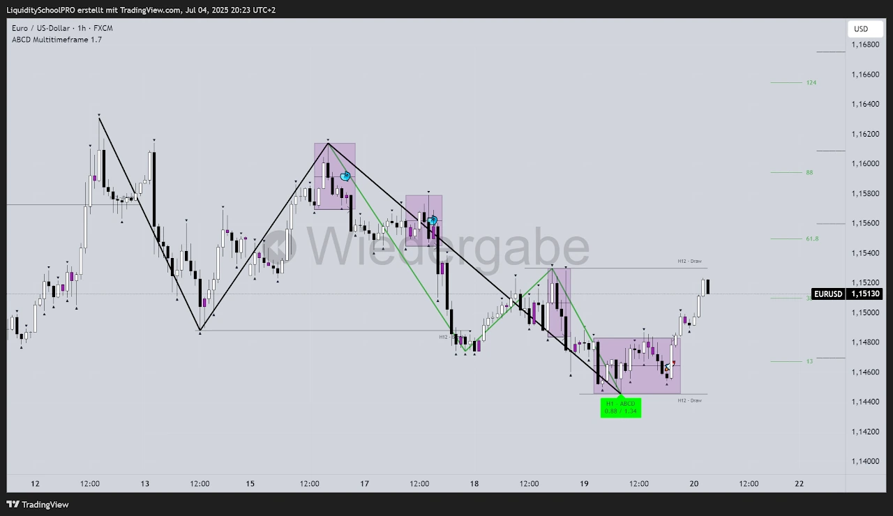
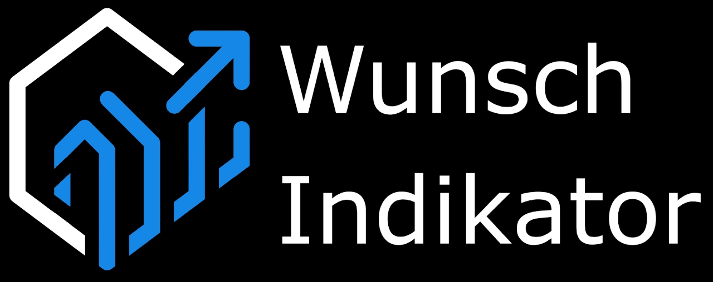
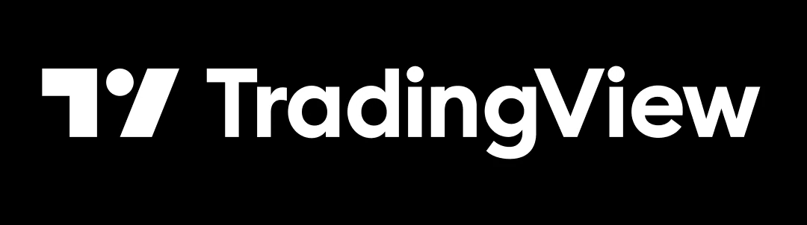

PINE SCRIPT · TRADINGVIEW
Ich programmiere deinen TradingView Indikator!
Du spielst schon länger mit dem Gedanken dir deinen eigenen TradingView Indikator programmieren zu lassen?
Es ist viel einfacher als du denkst! Kontaktiere mich einfach mit deiner Idee! Ich kläre dich über die technischen Möglichkeiten auf und werde das für dich realisieren!
Projekt besprechenEin Beispiel Projekt:
Hierbei sollen die letzten EURUSD und DXY Kerzen aus dem H12 angezeigt werden. Zudem wird im H1 die Marktstruktur nach spezifischen Pattern gescannt und die Daten zusätzlich in der Tabelle zusammengetragen.

Zum Projektpartner Liquidity School ProAuch komplexe Marktstrukturen sind kein Problem! Dieses Projekt zeigt harmonische Muster und die letzte H12 Swing Interaktion an!

Zum Projektpartner AlphamonicsWas ist möglich?
Nahezu alles!
- mehrere TradingView Indikatoren in einen überführen
- TradingView Indikatoren modifizieren --> hinzufügen von Alarmen, Linien, Tabellen, Inputs, etc....
- TradingView Indikatoren auf multiplen Timeframes
- TradingView Indikator als Scanner für gewissen Ereignisse --> Alarme für massive Zeitersparnis
- Komplett customized TradingView Indikatoren nach deinen Vorstellungen!!!
Vorteile deines eigenen Indikators:
- Verpasse keine Premium Setups mehr! Dein Indikator zeichnet dir deine Setups automatisch in den Chart ein!
- Reduziere massiv deine Chart Zeit: Lasse dich bequem vom Indikator auf deinem Handy benachrichtigen, wenn dein Premium Setup erscheint!
- Du hast eine Checkliste, welche der Markt abarbeiten muss? Lasse dir diese Checkliste visualisieren!
- Du willst systematisch deine Setups bewerten? Lasse das mechanisch von deinem Indikator eledigen!
- Entfalte dein volles Potential als Trader!
Interessant für dich? Dann kontaktiere mich einfach!


DER NÄCHSTE SCHRITT
Aus deiner Idee wird dein Programm.
Erzähl mir, wie du tradest. Ich helfe dir, deine Regeln in Code zu übersetzen und programmiere das für dich!
Reviews:
★★★★★ "Volle Empfehlung! Starke Umsetzung aller Wünsche und auch persönlich ein toller Typ! Macht richtig Spaß und gern wieder"
Google-Bewertung ansehen
★★★★★ "Michi ist ein sehr guter Programmierer! Was er für unsere Trading Community gezaubert hat ist einfach nicht von dieser Welt! Er weiß was er tut und ist dabei auch noch super sympathisch! Schenkt ihm euer Vertrauen und es wird sich lohnen!"
Google-Bewertung ansehen
★★★★★ "Es ist unfassbar, wieviel Arbeit der Indokator von Michi mir als Trader abnimmt. Setups werden automatisch identifiziert und ich muss nur noch die Trades setzen, so wie sie angezeigt werden. Außerdem werde ich per Alarm benachrichtigt, wenn das gewünschte Setup sich am bilden ist, oder ausgebildet hat. Das gibt mir die Freiheit nicht ständig am Chart sein zu müssen. Das nenne ich Freiheit!!"
Google-Bewertung ansehen
★★★★★ "Michi ist ein herausragender Pine Script Entwickler mit tiefem Verständnis für die Finanzmärkte! Sein Liquidity School Pro Indikator ist eine große Bereicherung für meinen Trading-Alltag, da er es mir ermöglicht, jedes gewünschte Setup mit passgenauen Alarmen abzubilden. Michi ist zudem äußerst freundlich und hilfsbereit und beantwortet geduldig jede Frage, die aufkommt. Dank seiner Expertise und seinem Engagement habe ich vollstes Vertrauen in ihn und empfehle ihn uneingeschränkt weiter!"
Google-Bewertung ansehen